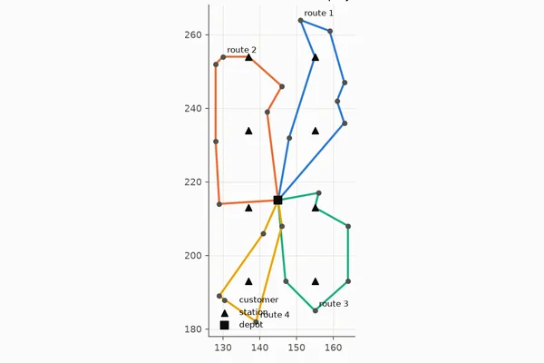
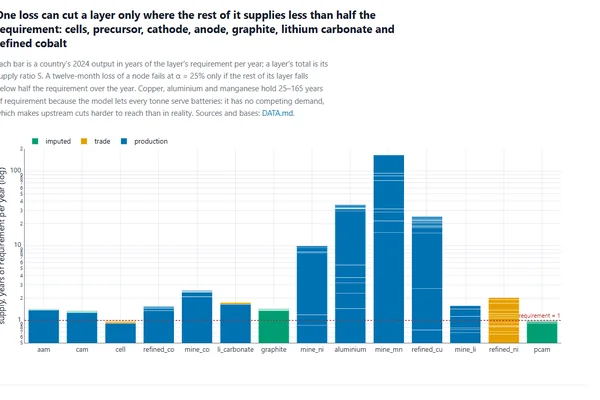
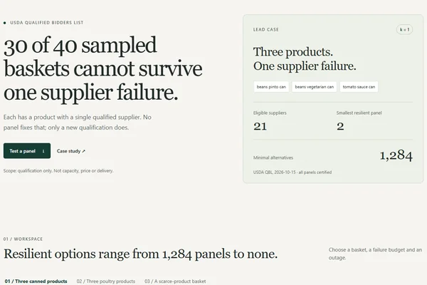
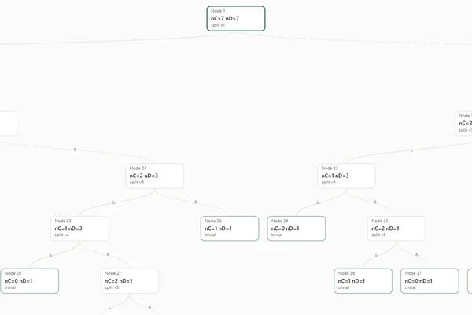
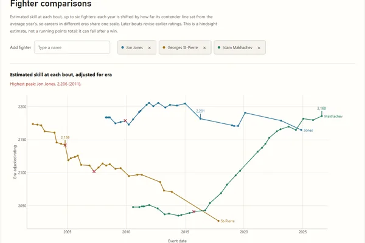
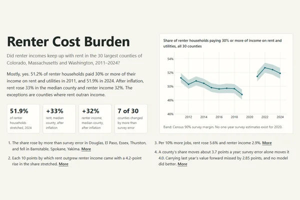
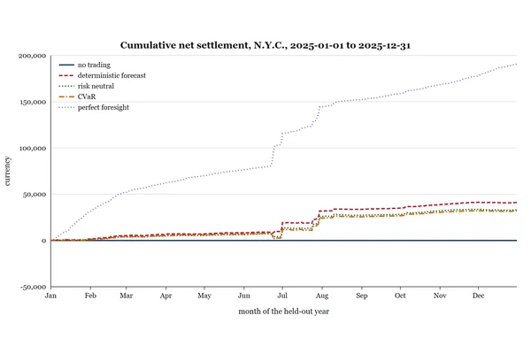
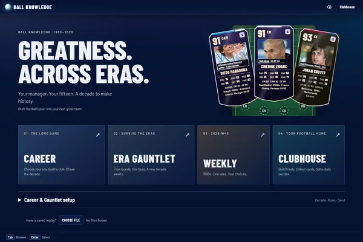

Saimon Islam
Operations research and data analysis · Vancouver, BC
I am a mathematician working in operations research and data analysis. My MSc in Mathematics at Simon Fraser University, supervised by Tamon Stephen, studied how symmetry affects the Fredman–Khachiyan algorithm for hypergraph dualization. From 2023 to 2025 I worked on compensation policy and analysis at the British Columbia Ministry of Health, on anesthesia contracts across 30 sites.
Below are my independent projects in routing, supply chains, electricity markets, housing and sport. Each links to its code and data and states its limits.
Projects
-

Electric Fleet Optimization
Proves the optimal routes for two instances of a public electric-vehicle routing benchmark; on one, the published value was not optimal.
Details
Problem. Electric vans and buses have limited range, so a plan must decide when and where each vehicle recharges as well as where it goes. The IEEE WCCI-2020 benchmark for electric-vehicle routing published best-known values that were never proven optimal, and no method reported a lower bound.
Method. A mixed-integer model on a station-path multigraph, bounded by a set-partitioning linear program solved by column generation with interior-point duals. Every reported plan is replayed, and every bound passes a schema check, so each instance is labelled certified, bracketed or open. The same core sizes buses and chargers for TransLink’s Route 100 timetable (219 trips a day).
Results.
- E-n22-k4 and E-n23-k3 certified optimal. On E-n23-k3 the optimum, 571.95, is shorter than the published 573.13.
- E-n30-k3 bracketed within 0.191%: a route shorter than the published one, and a proof that none is more than 0.2% shorter.
- Route 100: ignoring battery limits, 16 buses cover the timetable.
Limits. One depot, identical vehicles, no time windows or driver shifts. Four of the seven benchmark instances remain open, and the full-day bus result with batteries and BC Hydro prices has not yet been computed. It is not TransLink’s operating plan.
Contribution. Independent project: formulation, algorithms, validation and documentation.
Figure: E-n22-k4: the certified optimal routes (length 384.678).
-

Supply Chain Cuts
Five single-country losses, all in China, would each cut world lithium-ion cell output by a quarter or more over two years.
Details
Problem. Batteries and solar panels pass through mines, refineries and factories in many countries. Which losses of one country’s output, alone or with up to two others, would cut world production by at least 25% over 24 months, and how often might that happen?
Method. A capacity network from mine to cell, built from 2024 production statistics and, where those are missing, export mass. A recourse linear program gives the least shortfall under each disruption. Minimal cut sets of up to three losses are enumerated three independent ways (an interdiction MILP built from the LP dual, a lattice search, exhaustive search), and their lists agree. Annual probability is bracketed by an exact lower bound plus a Monte Carlo residual.
Results.
- Batteries: five single weak points (cells, cathode material, anode material, graphite, lithium carbonate), assuming plants can switch between LFP and NCM chemistries.
- Solar: four single weak points (polysilicon, wafers, cells, modules).
- If every export restriction recorded since 2012 were a complete shutdown, such a shortfall would occur in about 29% of years for batteries and 24% for solar. These are stress scenarios, not forecasts.
Limits. Much capacity outside China is estimated from export volumes. No plant locations are modelled, so natural hazards are a scenario only. Recorded export restrictions fail the predictive test.
Contribution. Independent project: model, enumeration methods, data reconciliation, validation and interactive site.
Figure: Supply of each layer in years of requirement; a single loss can cut only the layers near the dashed line.
-

Resilient Supplier Panels
In 30 of 40 sampled USDA food baskets, no choice of suppliers survives the loss of any one supplier, and in each case a single product is the cause.
Details
Problem. The USDA approves vendors for specific products before they may bid on its food purchases. A buyer wants a panel of suppliers that still covers every product in a basket after any one supplier fails. How small can it be, how many exist, and which suppliers cannot be replaced?
Method. Resilient panels are the minimal transversals of a scenario hypergraph. A MILP finds the smallest panel (median 0.8 ms). Berge’s method and FK-B, from the author’s MSc thesis code, enumerate every minimal panel. Separate code certifies each panel against the USDA list, and a second MILP certifies that none is missing.
Results.
- 30 of 40 baskets have no resilient panel; each contains a product with only one approved supplier. Approving a second supplier, not choosing differently, fixes it.
- In the other 10 baskets, 2 to 6 suppliers cover every product after any single failure.
- Canned-goods example: 21 approved suppliers, a smallest panel of 2, and 1,284 certified minimal panels.
Limits. Approvals only: not capacity, price, delivery record or shared ownership. One data snapshot (2026-10-15). Research, not a purchasing recommendation.
Contribution. Independent project: model, solver and enumeration pipeline, certificates and interactive site. Release 0.2.0.
Figure: The project site opens with the answer and a worked basket.
-

Hypergraph Dualization (MSc thesis)
Both Fredman–Khachiyan algorithms on one model, checked by an independent oracle; a search for hard inputs found one in the Witt design S(4,5,11).
Details
Problem. Given two hypergraphs, decide whether each is the transversal hypergraph of the other: list every minimal way to meet all of a family of sets, and prove the list complete. Whether this can be done in polynomial time is open. Fredman and Khachiyan’s algorithms FK-A and FK-B run in quasi-polynomial time, but FK-A slows on highly symmetric families.
Method. The thesis analyses symmetry in clique hypergraphs and their transversals, shows that the FK-A decomposition induces a minor map on the underlying graph, and characterizes hypergraphs that FK-A struggles with. The repository implements FK-A and FK-B on one bitset model, draws their recursion trees side by side, and checks every answer against an independent transversal oracle.
Results.
- FK-A and FK-B agree on every instance, and the oracle confirms every answer. The test suite (457 passing) reproduces the thesis’s published recursion trees.
- A search for new hard instances found one built from the Witt design S(4,5,11).
- Counting distinct subproblems rather than tree nodes, none of the published hard instances is hard for the recursion itself.
Limits. Small instances; whether dualization is solvable in polynomial time remains open.
Contribution. MSc thesis, Simon Fraser University, 2024 (senior supervisor: Tamon Stephen). The maintained Python implementation; the legacy implementation credits Saimon Islam and Lacey Liang.
Figure: FK-A on the Fano plane: 59 nodes, 30 leaves; automorphism group PSL(3,2).
-

MMA Career Rankings
One rating model of 81,616 professional fights ranks 34,147 fighters by career, peak and current form, on a scale adjusted for era.
Details
Problem. Ranking fighters across three decades and many promotions: rating scales drift upward over time, promotions differ in depth, and a short unbeaten record can look better than a long elite career.
Method. Whole-History Rating (Coulom, 2008) fitted to every career at once, so later results revalue earlier wins. Each year is read against its division’s contender line; promotion weights are shrunk toward the average where evidence is thin; titles, contender wins and skill are square-rooted on a common scale before weighting.
Results.
- 81,616 rated fights and 34,147 rated fighters; whole-career coverage for 1,826 of 1,837 eligible fighters (99.4%).
- Published boards for all-time, prime and current form, by weight class, for men and women.
- The site lets a reader change the score’s weights and see the order change, and checks forecast calibration against outcomes.
Limits. Not yet shown to predict fights better than a simpler rating; that test is open. Promotion labels are missing from 54% of rated fights.
Contribution. Independent project: rating model, data assembly, release checks and interactive site.
Figure: Era-adjusted rating at each bout, three careers compared.
-

Renter Cost Burden
Half of renter households in 30 large counties were rent-burdened in both 2011 and 2024; the change is within survey error, and next year’s share cannot be forecast.
Details
Problem. Did renter incomes keep up with rent in the 30 largest counties of Colorado, Massachusetts and Washington from 2011 to 2024, and did job growth make renters worse off?
Method. Census and BLS data, inflation-adjusted. Every change is compared with its Census 90% margin. Forecasts use only figures published by each forecast date, with 2023–2024 held back and registered before scoring.
Results.
- 51.2% of renter households spent 30% or more of income on rent and utilities in 2011 and 51.9% in 2024, inside the ±1.0-point margin.
- In the median county, rent rose 33% and renter income 32%; seven counties changed by more than the survey can miss.
- Carrying last year’s value forward (error 2.85 points) beat a regression (3.60) and boosted trees (3.12).
Limits. Thirty large counties in three states; associations, not causes.
Contribution. Independent project: data pipeline, estimation, forecast tests and site.
Figure: Share of renters paying 30% or more, with the Census 90% margin.
-

Electricity Clearing and Pricing
On a FERC two-unit example, convex-hull pricing cuts out-of-market side payments by 78% with the same dispatch.
Details
Problem. Power plants with start-up costs and minimum outputs cannot be paid by one price per hour, so markets add side payments (uplift) charged back to consumers. How much uplift is paid depends on the pricing rule.
Method. Exact unit-commitment and pricing models on small systems: locational marginal, convex-hull and average-incremental-cost prices, with the hull computed two ways and by Dantzig–Wolfe column generation, checked against each other and against published cases.
Results.
- FERC staff case: marginal pricing posts $90/MWh at the peak with $1,690 uplift; convex-hull pricing posts $276/MWh with $365.
- The two hull constructions agree to 2.6 × 10⁻¹⁶ on 104 feasible random systems; omitting congestion gives a wrong bound with no warning.
- A 1 MW, 4 MWh battery in New York City in 2025 would have netted about $41,000, 22% of the perfect-foresight $190,720 (archived output, not re-run).
Limits. Small systems; compares pricing rules, does not run a market.
Contribution. Independent project: models, decomposition, settlement checks.
Figure: Battery settlement in 2025 under five policies (archived output, revision 88d244d).
-
min λ wᵀΣw − (1 − λ) μᵀw s.t. 1ᵀw = 1, εᵢzᵢ ≤ wᵢ ≤ δᵢzᵢ, 1ᵀz = K, z ∈ {0,1}ᴺ
Sparse Portfolio Optimization
Cardinality-constrained portfolio models built and certified on public benchmarks; the empirical test awaits a licensed database.
Details
Problem. Does choosing a few stocks by optimization, rather than at random, lower the chance of trailing the market or Treasury bills, given that a few percent of firms account for all net stock-market gains?
Method. Six formulations (mean–variance and its perspective reformulation, absolute deviation, CVaR, index tracking, a third-moment model), each solved by an open-source solver and checked independently: cutting-plane bounds, KKT conditions, recomputation from returns.
Results.
- On OR-Library data, solver values agree with independent recomputation (CVaR to 4 × 10⁻¹⁷); one frontier comparison misses its 5 × 10⁻¹¹ tolerance and is reported as a failure.
- No investment result yet: the test needs CRSP data that includes delisted firms, to avoid survivorship bias.
Limits. OR-Library universes contain survivors only and validate computation, not strategy.
Contribution. Independent project: formulations, certificates and pre-registered test plan.
Figure: F1: mean–variance with at most K holdings (Chang et al., 2000).
-

Ball Knowledge
A browser game: draft fifteen players from eight decades of club football under a salary cap, then play your club’s real domestic league.
Details
Problem. A draft game across football eras must compare players from different decades on one scale and simulate plausible matches without a server.
Method. 52,976 club-era cards for 25,382 players from 268 clubs, rated from EA FIFA/FC and Championship Manager data or estimated where those are missing. A match model compares attack, midfield, defence and goalkeeper to set expected goals.
Results.
- The match model was fitted to club results from 2014–2019 and checked on 2020–2023.
- Runs entirely in the browser with bundled data; no account or install.
Limits. Era adjustments, manager grades and chemistry are declared game rules, not measurements; 1950s–1970s ratings are almost entirely estimated.
Contribution. Independent project: game design, data pipeline, match model and interface.
Figure: Start screen.


Experience
- Oct 2024 – Mar 2025Compensation Analyst, Alternative Payment Program, Ministry of Health, British Columbia
- May 2023 – Apr 2024Co-op Level II, Compensation Policy & Programs, HSWBS, Ministry of Health, British Columbia
- Sep 2021 – Apr 2024Graduate Research and Teaching Assistant, Simon Fraser University
- Nov 2020 – Sep 2021Training Assistant, Office of Antiterrorism Assistance, U.S. Department of State, Antiterrorism Assistance Program (ATA)
Education
- Sep 2021 – Dec 2024MSc in Mathematics (Operations Research), Simon Fraser University
- Aug 2015 – May 2019BSc in Mathematics (minor in Film Studies), Washington and Lee University